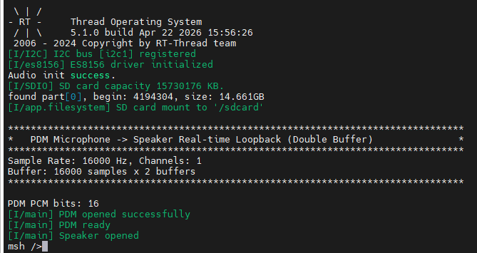

PDM Microphone Real-time Loopback Example Guide
English | 中文
Introduction
This example demonstrates how to use the RA8P1 PDM (Pulse Density Modulation) Interface on Titan Board Mini to read audio from a PDM Microphone and play it back in real-time through the ES8156 Audio Codec, implementing a Microphone → Speaker audio loopback function.
Main features include:
PDM microphone data acquisition using RA8P1 built-in PDM interface
PDM to PCM format conversion (supports 16-bit and 20-bit modes)
Mono to stereo audio processing
Double-buffer mechanism for continuous audio streaming
Audio output via SSI interface and ES8156 codec
Hardware Introduction
1. PDM Microphone
The Titan Board Mini features an onboard PDM Microphone:
Parameter |
Description |
|---|---|
Type |
MEMS PDM Microphone |
Interface |
PDM (Pulse Density Modulation) |
Output Format |
1-bit density stream |
Sample Rate |
Up to 16kHz (this example) |
Channels |
Mono |
2. RA8P1 PDM Interface
RA8P1 PDM interface features:
Built-in PDM demodulator: Hardware PDM → PCM conversion
Configurable filters: SINC filter, HPF, LPF
Multi-channel support: Supports multiple microphone inputs
Configurable output: Supports 16-bit or 20-bit PCM output
DMA support: DMA transfer support, reducing CPU usage
3. Audio Output
Codec: ES8156 (24-bit DAC, supports 8kHz - 192kHz)
Interface: SSI (I2S protocol)
Output: 3.5mm headphone jack / onboard speaker
Software Architecture
1. Data Flow
PDM Microphone
↓ (PDM signal)
RA8P1 PDM Interface
↓ (Hardware filtering + PDM→PCM)
PDM Buffer (int32_t[])
↓ (Software conversion)
DAC Buffer (int16_t[], stereo)
↓ (I2S protocol)
ES8156 Codec
↓ (Analog audio)
Speaker/Headphone
2. Core Components
PDM Driver
Using Renesas FSP PDM driver:
/* Open PDM module */
R_PDM_Open(&g_pdm0_ctrl, &g_pdm0_cfg);
/* Start data acquisition */
R_PDM_Start(&g_pdm0_ctrl, buffer, buf_size.bytes, samples);
/* Stop acquisition */
R_PDM_Stop(&g_pdm0_ctrl);
/* Close PDM module */
R_PDM_Close(&g_pdm0_ctrl);
Data Conversion Function
/* PDM data to DAC data conversion */
static void convert_pdm_to_dac(int32_t *pdm_data, uint32_t pdm_samples, int16_t *dac_data)
{
for (uint32_t i = 0; i < pdm_samples; i++)
{
int16_t sample_16;
if (g_pcm_bits == PCM_20BITS)
{
/* 20-bit -> 16-bit: shift right 4 bits */
sample_16 = (int16_t)(pdm_data[i] >> 4);
}
else
{
/* 16-bit mode: shift left 1 bit */
sample_16 = (int16_t)(pdm_data[i] << 1);
}
/* Mono to stereo */
dac_data[i * 2] = sample_16; /* Left channel */
dac_data[i * 2 + 1] = sample_16; /* Right channel */
}
}
3. Double Buffer Mechanism
To achieve continuous audio streaming, a double-buffer mode is used:
Timeline:
t0 t1 t2 t3 t4
|-------|-------|-------|-------|
Buffer 0: [Record ] [Play ]
Buffer 1: [Record ] [Play ]
Buffer 0: Record → Play
Buffer 1: Record → Play
Two buffers alternate for seamless continuous playback
4. Project Structure
Titan_Mini_pdm/
├── src/
│ └── hal_entry.c # Main program entry
├── libraries/
│ └── HAL_Drivers/
│ ├── drv_i2s.c # SSI/I2S driver
│ └── ports/
│ └── es8156/ # ES8156 codec driver
└── ra_gen/
└── hal_data.c # FSP configuration (PDM, SSI, etc.)
Configuration
1. PDM Configuration
Configure PDM parameters in ra_gen/hal_data.c:
const pdm_cfg_t g_pdm0_cfg =
{
.unit = 0,
.channel = 2, /* PDM channel */
.pcm_width = PDM_PCM_WIDTH_16_BITS_0_14, /* 16-bit output */
.pcm_edge = PDM_INPUT_DATA_EDGE_RISE,
.p_extend = &g_pdm0_cfg_extend,
// ...
};
2. Key Parameters
Parameter |
Value |
Description |
|---|---|---|
|
16000 |
Output sample rate 16kHz |
|
1 |
Mono input |
|
16_BITS_0_14 |
16-bit PCM, valid bits [14:0] |
|
2 |
Double buffer mode |
|
1 |
1 second audio per buffer |
Run Effect

After power-on, green LED lights up indicating system ready
Blue LED lights up indicating audio loopback is running
Speak into the microphone and hear your voice in real-time through headphones/speaker
Blue LED blinks every 50 cycles (heartbeat indicator)
Troubleshooting
1. No Audio Output
Check if headphones/speaker are properly connected
Check volume settings (default 60%)
Verify ES8156 initialization was successful
2. Audio Stuttering
Current uses 1-second buffer, try adjusting
PDM_RECORD_DURATION_SECCheck system load, reduce other tasks
3. Audio Distortion
Verify
pcm_widthconfiguration matches hardwareAdjust shift parameters in data conversion function